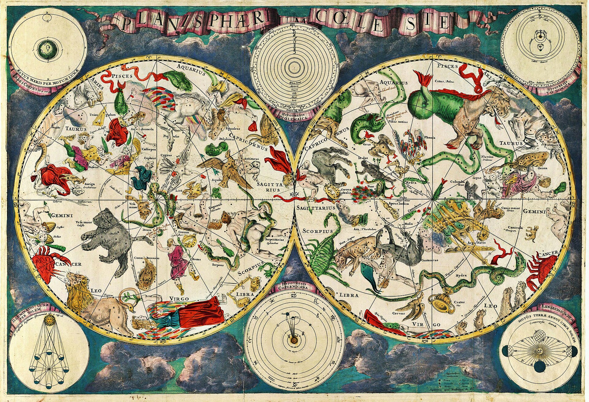
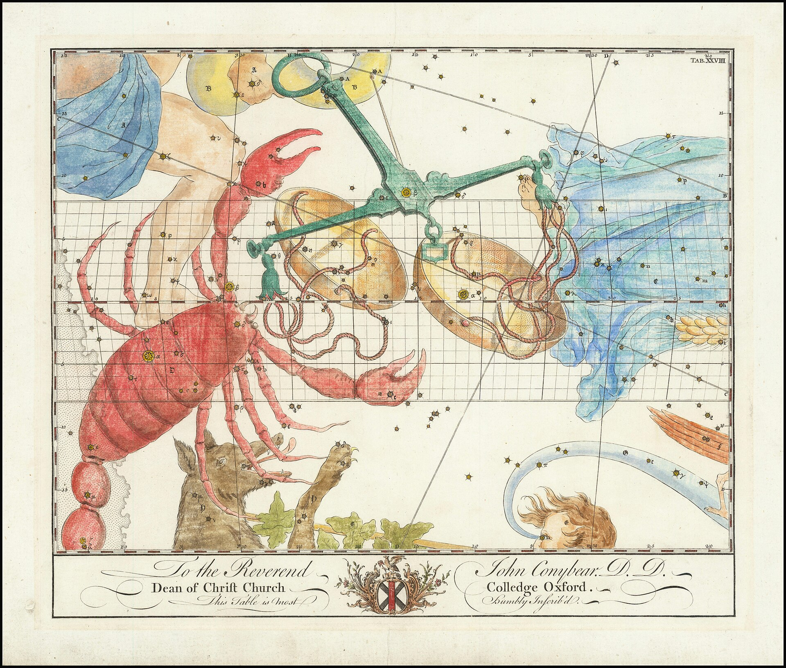
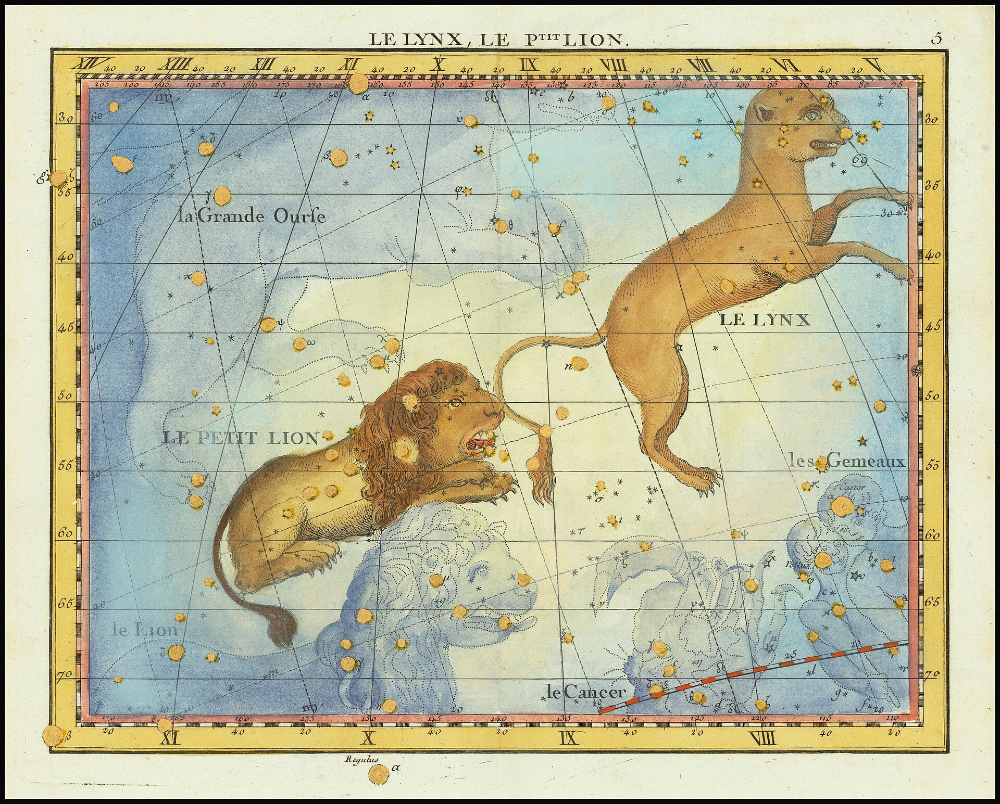
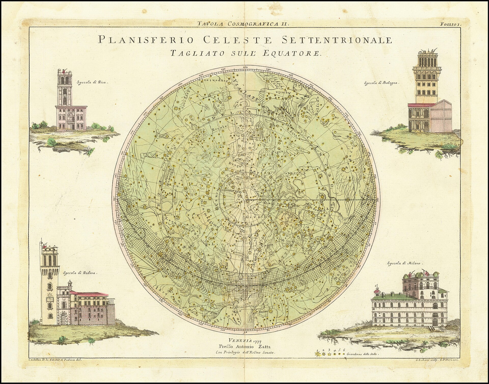

Map the attack paths
A field reference to prompt-injection patterns, arranged for people who test AI systems.
Explore the index172entries
4lenses
CC BY 4.0source data
Search the index
Find a pattern by name, reference code, delivery path, or the words used in other frameworks.
No entries match that search. Try another phrase or clear a filter.
Four ways in
Each lens asks a different question. Use them together to make a test plan precise.
“LOCAL” marks techniques that require access to model weights or internals; they do not apply to a black-box API.
Compose a test path
Pair one entry from each lens to outline a scenario worth reviewing.
This is a draft hypothesis. The source taxonomy does not validate connections between entries.
Use the combination to frame a human test plan. The site does not generate payloads or execute tests.
Read the star map
The index borrows its visual language from old celestial charts: each point belongs to a larger pattern, but the lines between points need interpretation.
These archival maps chart stars, not AI behavior. They are here as an honest metaphor for classification.




Trace every source
The taxonomy data is adapted from the Arcanum Prompt Injection Taxonomy. Its entries remain under CC BY 4.0 and are attributed to Jason Haddix and Arcanum Information Security.
Read the source taxonomyWhat this isA searchable reference and planning aid.
What this is notA scanner, benchmark, or guarantee that a system is safe.
How to cite the dataHaddix, J. (2026). Arcanum Prompt Injection Taxonomy, v1.6.1. CC BY 4.0.